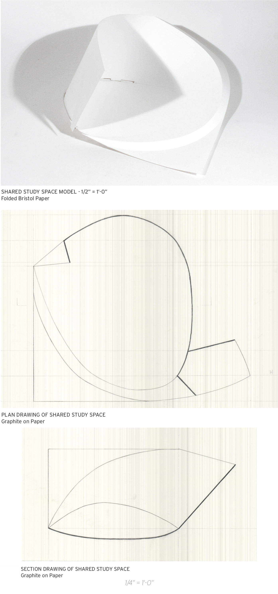
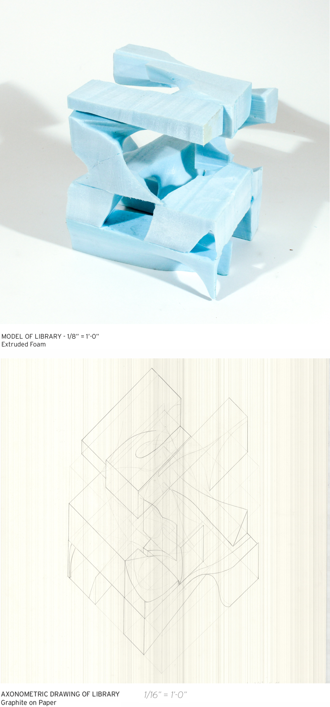
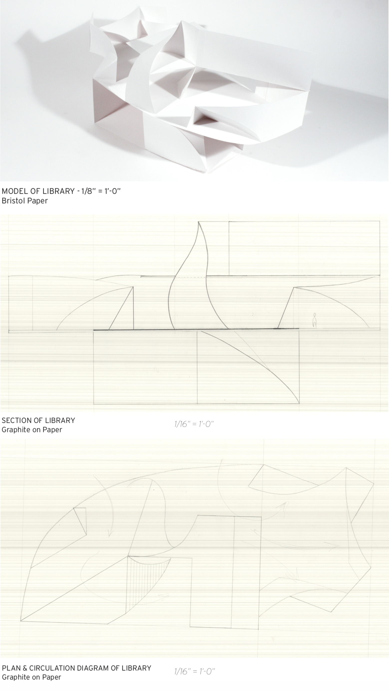
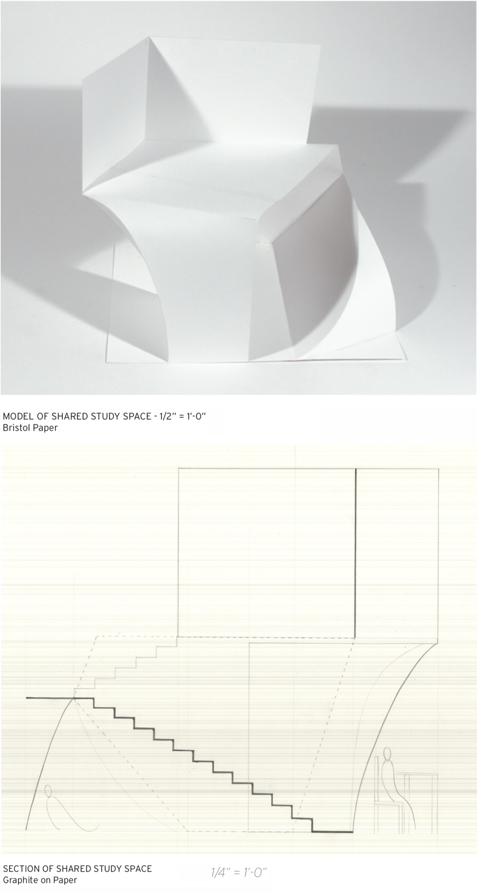
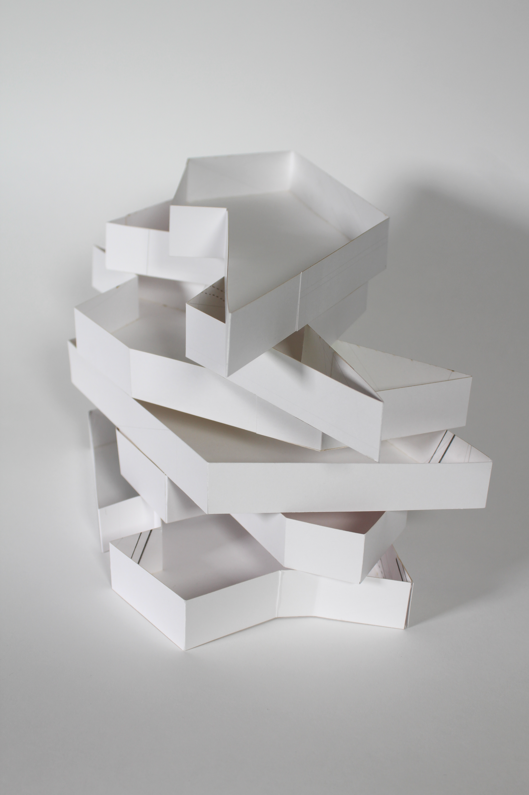
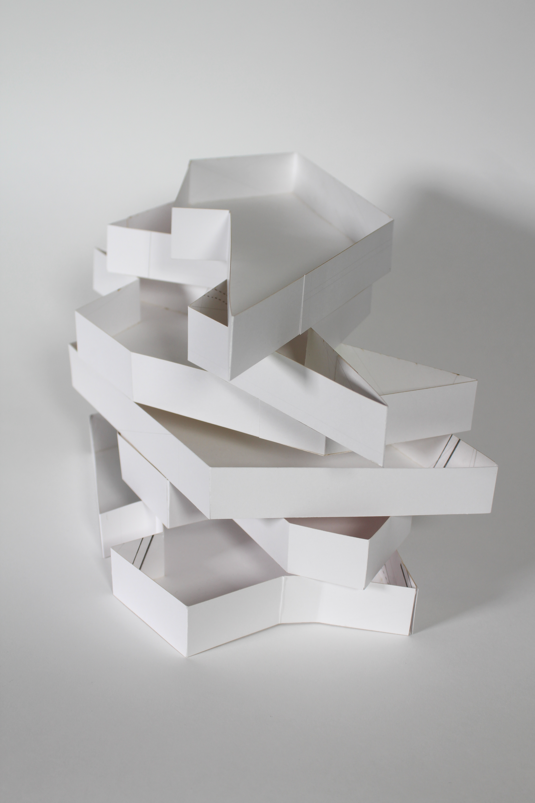
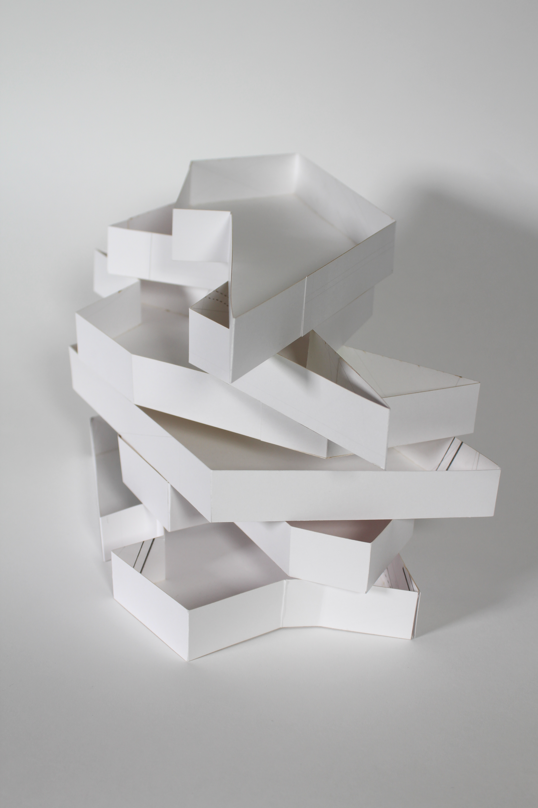

nook library, 2019
public library proposal






 


This project was a semester's study to develop a concept for a public library in downtown Providence. My work was centered on the idea of inhabitable nook spaces, seeing the library as a community nook within the downtown, a group nook for small clubs and organizations, and a private nook for the individual.
Through this work I developed an understanding of architecture as the strategic interplay of internal disciplinary systems towards external ends. Both simultaneously abstract and real, this collection is a dialogue and oscillation between representation that produced an iterative developmental process for the design of my library.